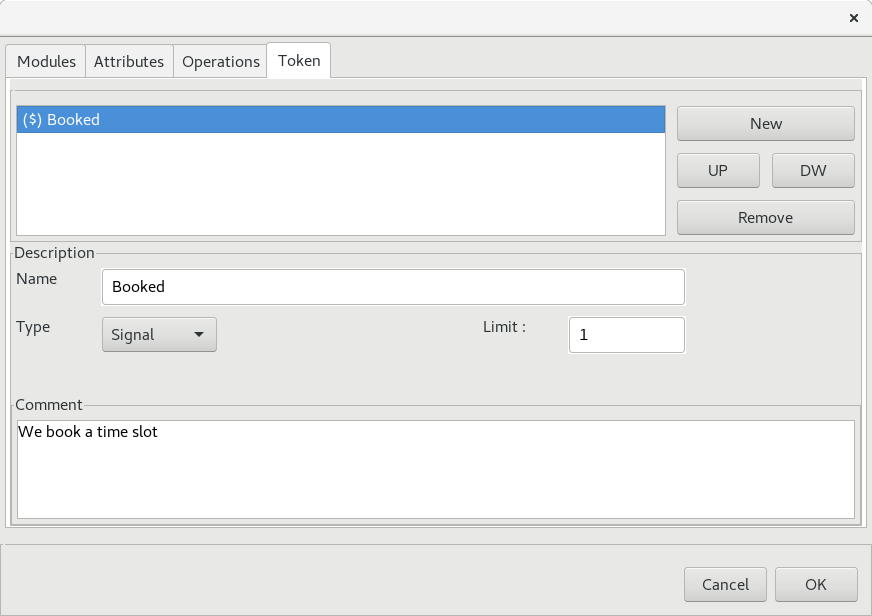
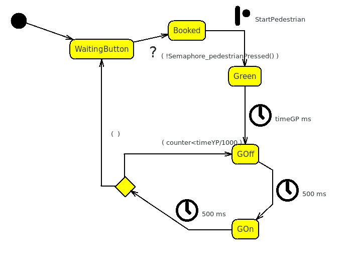

We said that Pedestrian and Semaphore work
separately, and this is great from the point of view of the
informatic science but very dangerous for the pedestrian.
We need to connect the machines, and this can be do in several
safest, simpler and more logical ways, but we are writing a
tutorial about the tokens and not building a real semaphore.
The idea is that, pressing the button, the pedestrian books
a time slot for his little semaphore that must be
synchronized to give a double RED and to allow the
pedestrian crossing.
We can do that by introducing in the Semaphore, something
that receives a message : “hey … someone is booking a time slot”,
then the Semaphore should tell the Pedestrian that
“it’s time to start”, and at the end the Pedestrian
should tell to the Semaphore “I’m ok you can continue with your
stuffs”.
| From |
To |
Action |
|
| 1 |
Pedestrian |
Semaphore |
Booking a time slot |
| 2 |
Semaphore |
Pedestrian |
You can go now |
| 3 |
Pedestrian |
Semaphore |
I'm done |
This is a good opportunity, to use the Tokens but they
can also be used to send messages from interrupts and other
critical code blocks.
The first thing we need is something in the Semaphore
that is able to receive the Message 1 from
Pedestrian .

We can define the Booked Token into the token tab, in the
Semaphore Module Editing Dialog Box .
To make things more interesting, we define a Signal Type
token here.
A Signal Type Token is not a real token, it can be considered a simple function, or operation, that is public, that uses an internal private token.
This means that to raise the token, we do not need to call the TokenRaise macro with the name of the token, but the Semaphore_Booked ( ) function.
The Limit to 1 makes the booking unique independently
from the times the pedestrian pressed the pedestrian button.
After the Booked Token we need to define the Message
3 token, we can call it PedestrianDone :
TokenRaise(PedestrianDone);This can be done everywhere into the project code as well as in a interrupt routine, without the need to include the module where the token is defined, because it is referred into the tokens.h header that is included by default.
Now we need to introduce the token for the Message 2 in Pedestrian , so we can open the related dialog box and add a Token.
Note that in this case, Token must be a Counter, because Semaphore does not depends by Pedestrian and does not include any public function of pedestrian.
Any attempt to make Semaphore depending from Pedestrian, creates a mutual dependency that should be avoided.
At this point we need to modify Pedestrian and Semaphore to connect the tokens.

In the new model we cannot start the cycle until we receive the Message 2 from Semaphore .
We need to send the request to Semaphore between WaitingButton and Booked :
Semaphore_Booked();
And tell the Semaphore we have finished (Message 3) between the Branch and the WaitingButton.
We can do that with TokenRaise :
TokenRaise(PedestrianDone);
The trigger between Booked and Green is a token receiver instead that uses the StartPedestrian defined in Pedestrian .
We can use the Transition Editing Dialog Box to do this , by choosing the token from the choice box.
/* Bit X X GD YD RD GC YC RC */ PORTD=B11010001;From YDir2 after the timeYD , the Semaphore goes in Pedestrian Mode with a double RED :
/* Bit X X GD YD RD GC YC RC */ PORTD=B11001001; TokenRaise(StartPedestrian);
/* Bit X X GD YD RD GC YC RC */ PORTD=B11001100;